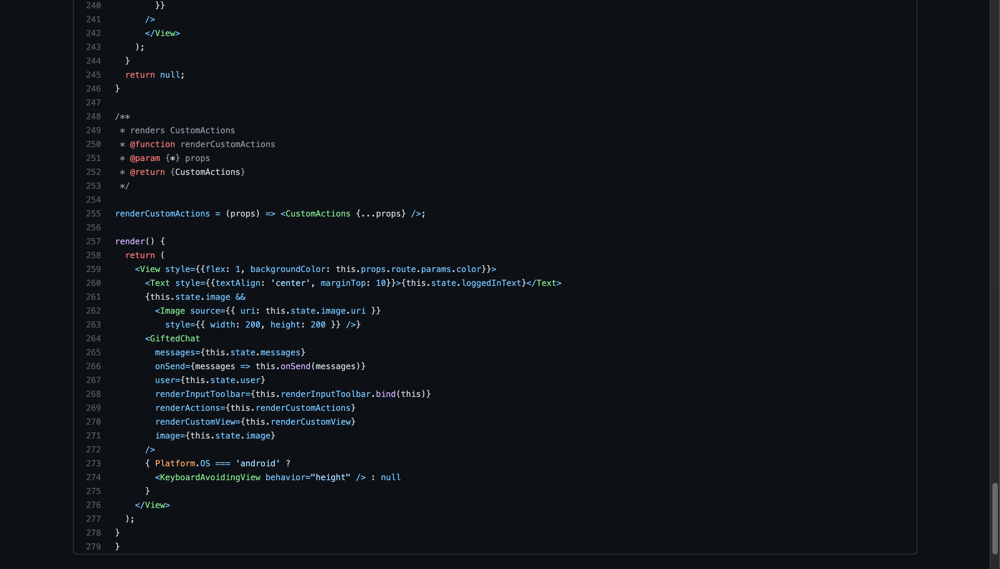

Chatter is a mobile app, developed using React Native and the Gifted Chat Library, that provides users with the ability to choose a username, pick a background color, and enter a chat where they send images, their location, etc.
Chatter was a personal project I built as part of the web development course at CareerFoundry, to demonstrate my knowledge of React Native.
The goal of the project was to obtain a mobile application that I could add to my portfolio. The problem that I desired to solve was to build a mobile application, using React Native and the Gifted Chat Library.
Concerning the server side of it, I used Google FireStore to store messages, images, and location.
The client side is built with React Native. It provides two views, the first being the screen where users pick their username and background color, and the second being the actual chat screen. In the chat, users can send text, images, or location.
This proved to be one of the less challenging projects of the course. However, I did face some challenges getting it all working right. One challenge was that while testing the sending of the user location, for some reason I kept getting one particular error, and it refused to send the location. Eventually, after a lot of googling of the error, and after a lot of frustration, another student helped set me aright as to the cause of the error. Turned out, that when trying to send the location, because there was no text being sent, it would mess it up. To fix it, I had to make sure that if there was no text being sent, it just added an empty string. One thing that I learned from this experience is that, in the end, you just need to really read the error message. I discovered this because after the student pointed the problem out, I went back and read the error message more carefully, only to discover that it pretty much did actually describe what the error was.
The development of the application took about the time expected, as everything went pretty much on schedule.
Role: Lead Developer
Tutor: Shan Gardezi
Mentor: Alexis Gormley